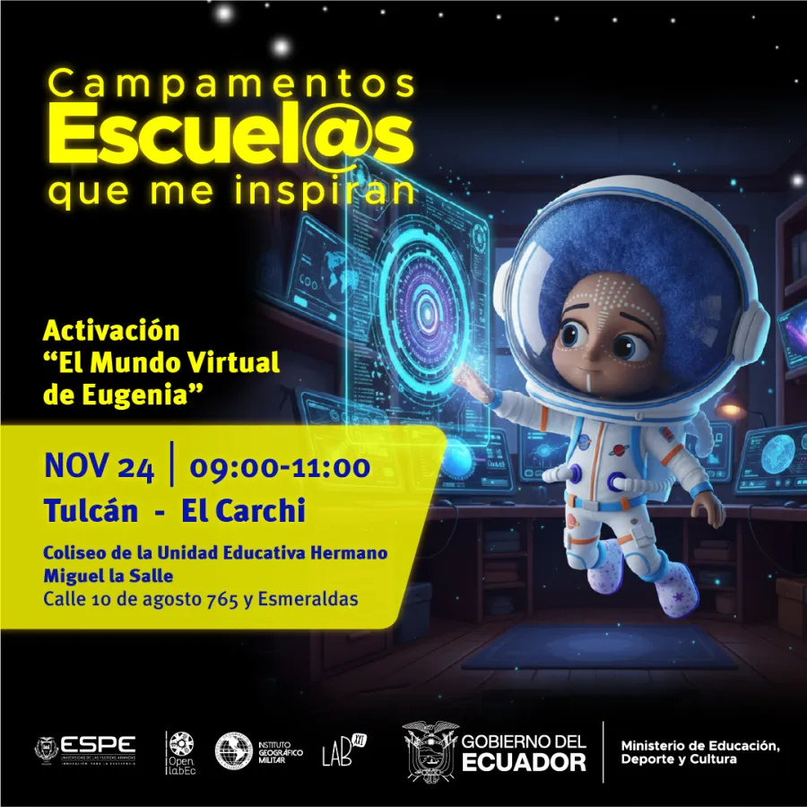
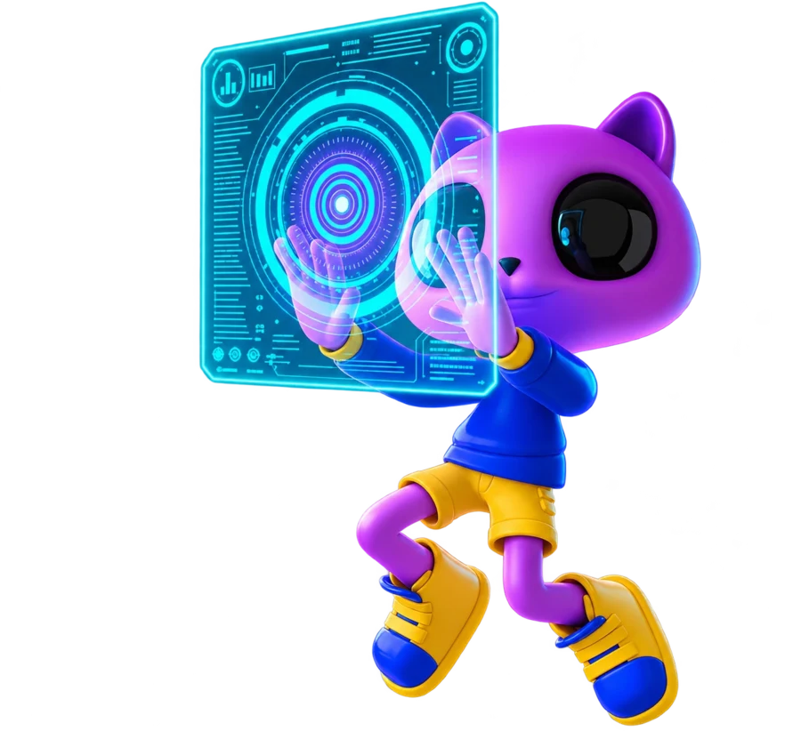
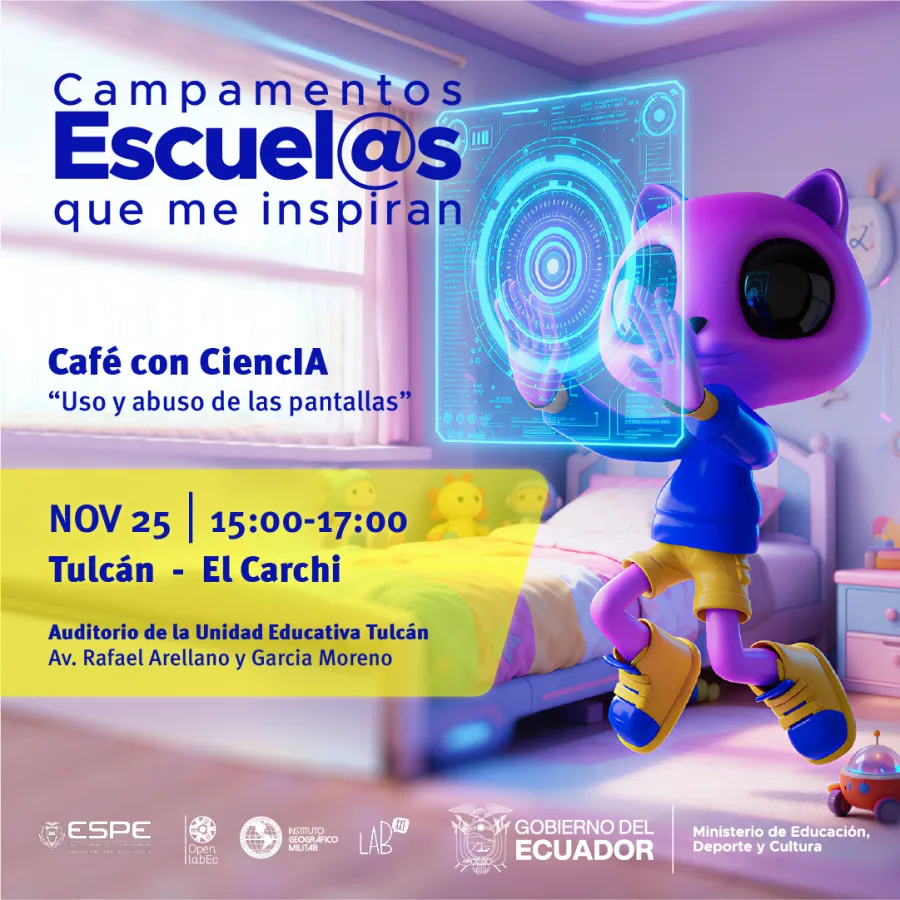
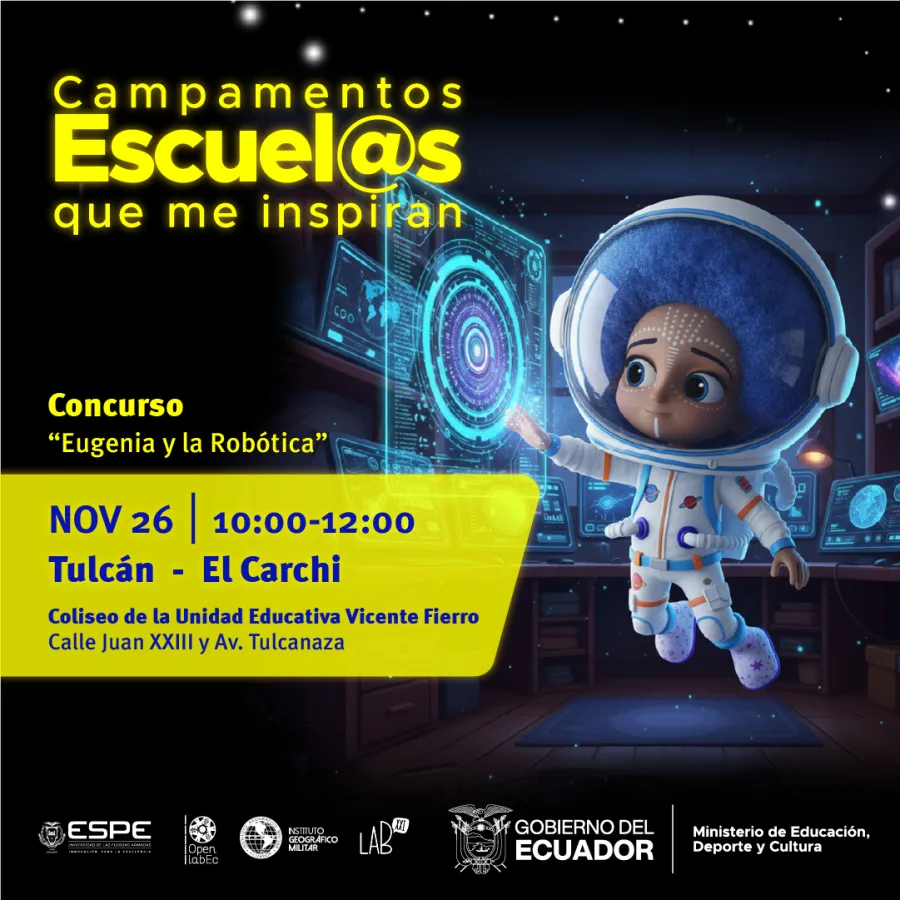
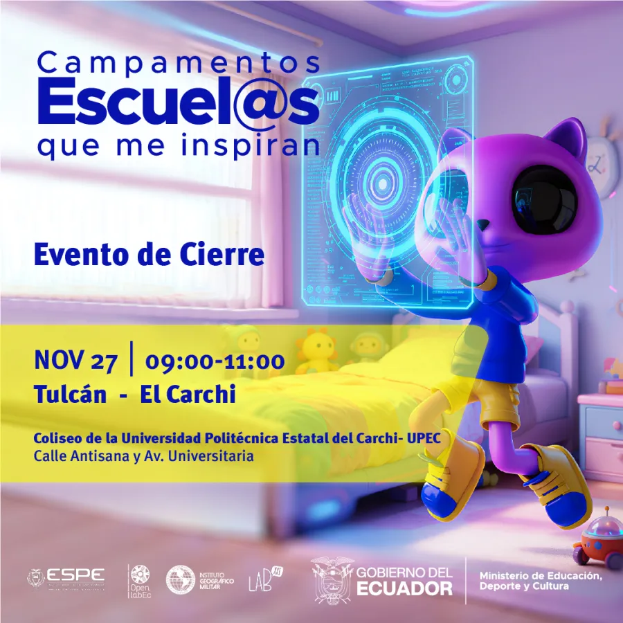
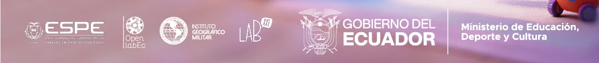

24Martes
Fundamentos y primeros talleres
- Talleres y hackatonesUPEC y unidades educativas sede
- Activación “El Mundo Virtual de Eugenia”Coliseo de la U.E. Hermano Miguel La Salle

Ministerio de Educación, Deporte y Cultura
Del 24 al 27 de noviembre de 2026 en Tulcán, Carchi.
Faltan para los primeros talleres

El campamento
Días de aventura, aprendizaje y creatividad para docentes, estudiantes y autoridades. Ciencia, tecnología, robótica e inteligencia artificial al pie de los volcanes Chiles y Cumbal, en la ciudad de Tulcán.
Conoce los talleres¿Qué es?
Los Campamentos Escuel@s que me inspiran son una iniciativa del Ministerio de Educación, Deporte y Cultura del Ecuador para potenciar las habilidades, la creatividad y el talento de docentes y estudiantes.
Durante una semana, Tulcán —la ciudad más alta de la frontera norte— se convierte en un gran laboratorio de innovación: talleres, hackatones y concursos que crecen día a día hasta un gran festival de cierre.
Del 24 al 27 de noviembre vivirás:
Programa
Cada grupo tiene sus propios horarios: revisa los tuyos en el detalle de cada taller.




Talleres y hackatones
Áreas de aprendizaje guiadas por las instituciones aliadas del campamento. Toca una tarjeta para ver la descripción, los horarios y las instituciones convocadas.
14 actividades
El Mundo Virtual de Eugenia
Encuentro
“Uso y abuso de las pantallas”
El Café con CiencIA es un espacio de encuentro, diálogo e intercambio de conocimientos entre estudiantes, docentes, madres y padres de familia, a través de conversaciones dinámicas y participativas con especialistas.
En un ambiente cercano y relajado, conversaremos sobre cómo convivimos con las pantallas, la inteligencia artificial y la tecnología en la vida diaria, promoviendo la curiosidad, el pensamiento crítico y el aprendizaje colaborativo.
NOV 25 15:00-17:00
Tulcán - El Carchi
Auditorio de la Unidad Educativa Tulcán
Av. Rafael Arellano y García Moreno
60 cupos entre docentes, estudiantes y padres de familia
Sedes
Capital de la provincia del Carchi, en la frontera norte del Ecuador, a casi 3.000 metros de altura y frente a los volcanes Chiles y Cumbal.
Talleres y hackatones · NOV 24-26 · 08:00-17:00
NOV 24 · 09:00-11:00
Coliseo de la U.E. Hermano Miguel La Salle
Calle 10 de Agosto 765 y Esmeraldas
NOV 25 · 15:00-17:00
Auditorio de la Unidad Educativa Tulcán
Av. Rafael Arellano y García Moreno
NOV 26 · 10:00-12:00
Coliseo de la U.E. Vicente Fierro
Calle Juan XXIII y Av. Tulcanaza
NOV 27 · 09:00-11:00
Coliseo de la UPEC
Calle Antisana y Av. Universitaria
La convocatoria se realiza a través de las instituciones educativas participantes y de la Dirección Distrital de Educación. Consulta con las autoridades de tu unidad educativa qué taller te corresponde.
Explora los talleres